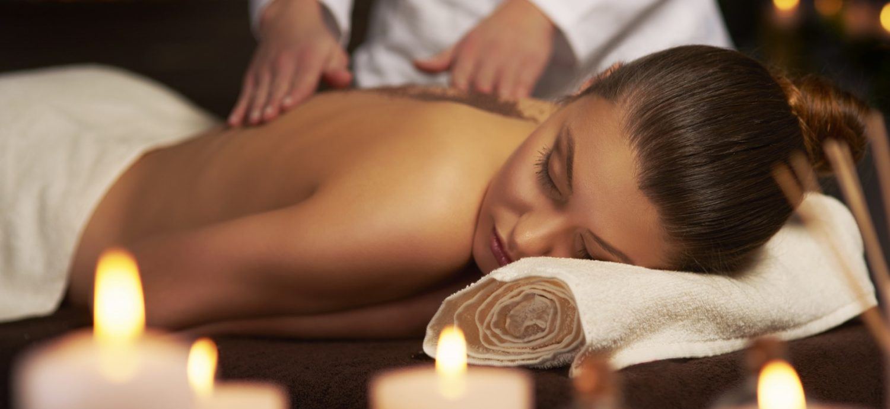
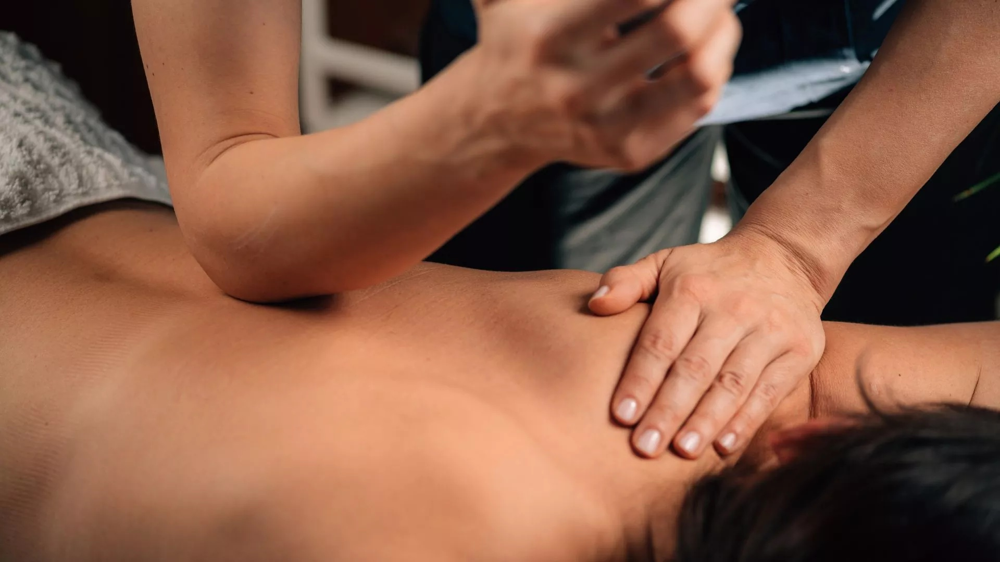

Nuru Massage

Nuru massage is a type of sensual massage that involves body-to-body contact between me and you, using a special gel or oil.
Book this service→Price:﹩150/hour
We offer a range of wellness services designed to support your relaxation and wellbeing.
Nuru massage is a type of sensual massage that involves body-to-body contact between me and you, using a special gel or oil.
Book this service→Price:﹩150/hour

Thai is an ancient healing system that combines rhythmic acupressure, deep compressions, and yoga-like-movements. It is usually performed on a floor mat with the practitioner using their hands, elbows, knees, and feet to apply pressure and guide you through deep stretches.
Book this service→Price:﹩150/hour
Prostate massage is the stimulation of the male prostrate gland, it's often referred to as the 'male G-spot' because it is highly concentrated with the nerve endings and it is performed for two main reasons; medical therapy by a healthcare provider, or sexual pleasure.
Book this service→Price:﹩150/hour
Aromatherapy massage is a gentle massage that uses essential oils to promote relaxation and balance in the body and mind.
Book this service→Price:﹩150/hour

A deeper massage technique that focuses on areas of muscle tension and tightness.
Book this service→Price:﹩150/hour
GFE is a service where a companion simulates the emotional and physical aspects of a real romantic relationship.
Book this service→Price:﹩200/hour